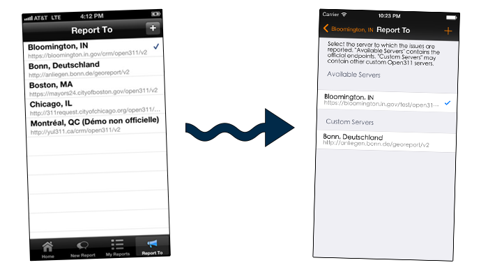
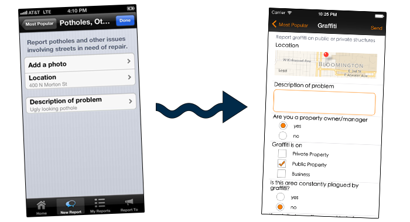
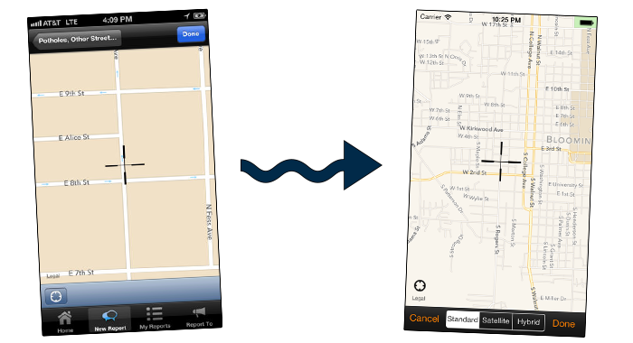
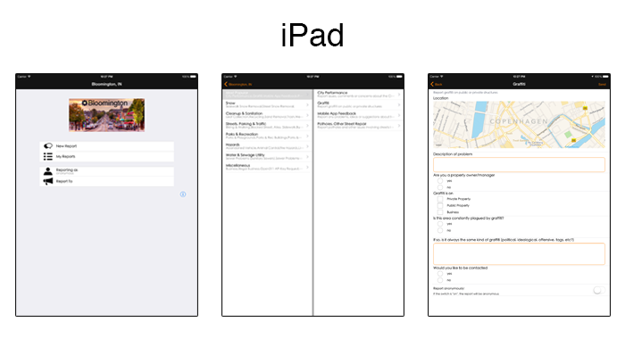

GeoReporter

- 
- 
- 
- 
GeoReporter is the project I've worked on during the 2013 Google Summer of Code program. It wasn't a completely new idea, the app already existed but it had several issues that needed to be fixed. My proposal for GSoC, which was accepted, contained a new user interface and an iPad version.
The app is basically a client for the Open311 server. For the networking part, it uses AFNetworking. Another thing which I implemented during the 2013 GSoC was the transition to iOS 7.
The images show the UI before and after my 2013 GSoC. I liked the project and the idea of contributing to an open source iOS app, so I kept working on this even after the Google Summer of Code ended.
My exact contribution to this project during the GSoC 2013 ca be found at GitHub. The app is in the AppStore, but the updated version hasn't been released yet.